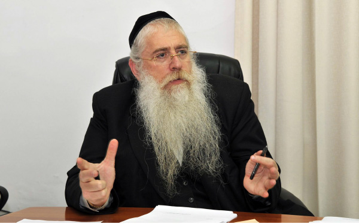

Closing the Generation Gap
We sat with R’ Yaakov Moshe Spitzer, one of the leaders in the Sanz-Klausenberg community, and his son, R’ Yonasan Spitzer, shliach in moshav Mata. * How R’ Yonasan became a Lubavitcher Chassid. * What the Klausenberger Rebbe had to say about the Rebbe, about Lubavitch, and about shlichus. * Part 2 of 2
GROWING INTEREST IN CHASSIDUS

R’ Yonasan began learning Chassidus when he was a high school boy.
“As I said, I had an inexplicable interest in Chabad. I felt a need to learn Tanya. I went to Yeshivas Toras Emes one day and met two bachurim, one the son of R’ Zajac of Brazil and the other one was from the Butman family, who is a shliach in Hadera now. One of them learned Kuntres U’Maayan Mi’Beis Hashem with me, and the other learned Tanya with me. At a certain point, I began bringing friends along and we would learn together. To me it was a “Torah Chadasha.” S’firos. Supernal worlds. Amazing explanations of the inner meaning of mitzvos. The bond between the Jewish people and Hashem. These subjects are usually not spoken about in Litvishe yeshivos; if they are, it’s only in the form of trite clichés.
“This went on for a long time until someone tattled on us to the hanhala. One of the staff members asked me why on an off-Shabbos did I get off the bus at the stop near Toras Emes rather than the stop near my parents’ home. The mashgiach threatened me that if I didn’t stop, he would tell my father.
“I was a young kid and despite the great loss I felt without learning Chassidus, I stopped my encounters with the bachurim from Toras Emes. I continued only after I had graduated high school and was in beis midrash, Yeshivas Slobodka in B’nei Brak. I yearned for Chassidus and a Lubavitcher who lived in the neighborhood, whom I told that I wanted to learn Chassidus, referred me to the mashpia, R’ Zalman Landau.
“I met him every Thursday in his home and we learned Chassidus. We learned Tanya, maamarim and sichos. To me, R’ Landau was a type I had not met before; someone who worked on himself, someone who learned and implemented what he learned in his personal life. When he explained what real t’filla is, he davened that way himself.
“In yeshiva, I became known as the Chabadnik. In general, in the Litvishe world it’s known that there are bachurim who are considered Lubavitch even though, outwardly, they look like everyone else. I was considered the Chabadnik of the yeshiva, because the closet in my room was full of pictures of the Rebbe and Chabad s’farim.
“My room in yeshiva was known as an interesting room. There were bachurim who came to my room to learn Tanya from Lessons in Tanya. Others came just to debate and ask questions on the topic of Chabad. The top guys in yeshiva didn’t stop harassing me. But I just ignored them. There were some who would not make Kiddush on wine that I had touched, thanks to what that rosh yeshiva in B’nei Brak said.
“One day, I saw that my Tanya had disappeared from my room. I was very upset. I loved learning it. The theft resulted in my learning with R’ Zalman Landau in the Alexander shul. About fifteen boys from the yeshiva participated. The shiur went on for a long time until someone tattled. The mashgiach called me to his room and gave me a choice – either I would stop learning Chassidus and schlepping bachurim along with me, or I would have to leave the yeshiva. I responded respectfully, but had no intentions of stopping to learn Chassidus. It was my spiritual oxygen. During the meeting with the mashgiach, I saw my Tanya lying there in a corner. I asked him how he got it and he tried to dodge the question. I said, ‘The mashgiach has spoken a lot lately about theft and here is an outright theft!’ He gave the Tanya back to me.
“A relatively quiet period ensued. The shiur with R’ Landau continued and I remained in the yeshiva. You have to understand that the Litvishe approach provides you only with technical know-how but is devoid of feeling. Chassidus provided me and my friends with enthusiasm. I remember how one Thursday night some friends and I were sitting in one of the rooms with plates of steaming chulent, when one of them asked – does anyone have any idea what G-d is and how He looks?
“Some said it was forbidden to discuss this and others gave their answers. Sadly, some of the answers cannot even be written here. This intensified the interest of myself and my friends in hashkafa and emuna. When you are raised with Chassidus, you don’t know how fortunate you are. Chabad resolves numerous questions in emuna as a matter of course.
“Along with the shiur with R’ Landau, I discovered the Chassidus library near the yeshiva. I would go there every week. One day, at the beginning of 5753, I heard that R’ Mendel Wechter would be giving a shiur in Chassidus there. I went and was hooked. R’ Wechter asked me to bring other boys from yeshiva which I did. Together, we began learning Tanya and Likkutei Torah.
“We kept our shiurim with R’ Landau and R’ Wechter a secret, for obvious reasons. The hanhala of the yeshiva was very fearful of Chassidus and it was absolutely forbidden to bring sifrei Chassidus into the yeshiva.
“Since our secret was known by many people, it eventually got out. One morning we were discovered by the rosh yeshiva’s brother-in-law who looked shocked. He quickly recovered and began chastising us about learning Tanya which he said was heresy. ‘It says there that a Jew has a neshama which is literally part of G-d. Do you realize what you’re learning?!’ he shouted. ‘Is Hashem something tangible that you can touch?’
“The next day I was called into the rosh yeshiva’s office. He said he knew that I was the one who organized the shiur and he gave me an ultimatum. Either I stopped or I would be expelled from the yeshiva immediately. I tried to defend myself and asked him why they made learning Chassidus into such a serious thing when it was m’chazek me and the others in emuna and yiras Shamayim. That bachurim went to the beach on Fridays to relax was okay but learning Chassidus was not?!
“He stuck to his guns and was unwilling to accept what I said. ‘If it doesn’t suit you, you can leave.’ He called my father and told him about the Tanya shiur I organized. My father came to the yeshiva and it was most unpleasant, but I did not agree to forgo learning Chassidus. I told my father that he should tell the rosh yeshiva that Tanya is Torah and if I couldn’t learn the Torah I wanted to learn, I would not stay. I preferred leaving the yeshiva.”
SHOCKING THE FAMILY
R’ Spitzer sat facing his son, listening as though hearing this for the first time. He nodded and said, “I wasn’t pleased by how Yonasan was behaving. I think you can learn in a Litvishe yeshiva and remain a Chassid without rocking the boat. I remember how Yonasan told me that if he wasn’t allowed to learn Tanya, he wouldn’t stay in that yeshiva. I tried to calm things down and went to speak to the rosh yeshiva, R’ Moshe Hirsch. He said they did not want to expel Yonasan; they hadn’t really planned on doing that. He said he was a bachur who learned seriously and it would be a pity if he left.
“Alas it was too late, because Yonasan was already planning on switching to a Chabad yeshiva. I wanted him to grow up as a Sanzer Chassid. The Lubavitcher Rebbe and Chabad Chassidus were important to me, but I didn’t think he would turn into a full-fledged Lubavitcher. What father doesn’t want his son to follow in his footsteps? I remember seeing the Klausenberger Rebbe at that time and telling him, sadly, that my son had switched to a Chabad yeshiva and had become a Lubavitcher Chassid. The Admur said, ‘They are great people. If I let you read the kvitlach I get from young boys with questions in emuna, you would dance for joy that your son is not only not floundering when it comes to emuna, but is finding his way within Toras Ha’chassidus.’
“I told him that I wanted him to follow me in Sanz but the Admur reassured me. Today, I am happy that my son is doing great things, and in his shlichus he is being mekarev many Yidden. But back then, I found it hard to accept. It’s not easy when things happen and you don’t know where they are going and how they will develop.”
R’ Yaakov Moshe Spitzer wanted to share what he heard from his teacher in Kfar Chassidim, R’ Elya Lopian, fifty years earlier, about how the machlokes between Chassidim and Misnagdim is based on error.
“R’ Lopian was the ‘R’ Yisroel Salanter’ of the previous generation. When he was 90, he addressed us talmidim and said that what it says in Nefesh HaChayim, Shaar 4, that he went into a shul and did not find Gemaras but only sifrei musar, and that due to our many sins, people learn sifrei yira and musar exclusively and don’t even have one complete set of Shas, and this is not what Hashem wants, and this will result in there not being any talmidei chachomim – all this is in error. Why? Because I visited Sanz, said R’ Lopian, and I met a gaon ba’Torah.
“Today, in Litvishe yeshivos, they learn musar and in Chassidishe yeshivos they learn Nigleh. That’s why I did not understand why Yonasan couldn’t remain in yeshiva and continue learning Chassidus. Why did they make him leave? In recent times, unlike previously, there is inclusiveness.”
R’ Yaakov Moshe fell silent, looked off into the distance, and then smiled and said, “Nu, that was something that happened in the past. Today, obviously I’m happy about his choice. Heaven brought it about. It’s the root of his neshama.”
Upon R’ Landau’s advice, Yonasan began learning in Yeshivas Tomchei T’mimim in Migdal HaEmek in the month of Elul. Like in all Chabad yeshivos, during Elul there is an air of anticipation for the trip to the Rebbe for Tishrei.
“That Tishrei in Crown Heights, I underwent the final ‘crushing’ on my path to the world of Chassidus. Each farbrengen I attended added another layer to the great joy I felt on my way to becoming a Tamim. Although the physical circumstances were not pleasant, and I had never experienced anything like that before, I was willing to put up with it all, because I felt that I was finally finding what I had been looking for.”
Yonasan remembers how shocked his father and other family members were when they realized that he was becoming a Lubavitcher.
“Throughout that time, in Slobodka and even before that, my father did not know how deeply connected I felt to Chabad. Maybe that was a good thing, because if he would have known, maybe he would have tried to stop me. It was a shock to him. I remember it well. I remember how one Shabbos my younger brother wanted to join me on a trip to the yeshiva in Migdal HaEmek and at the last minute he did not come along, giving me various excuses. When I asked him later on what the real reason had been, he said my father had forbidden him to go. He was afraid that he too would become a Lubavitcher.
“My father loves Chabad, but in hindsight, being more mature now, I think that maybe I made the switch with undue drama and this scared him. You need to understand that I wasn’t a Chabadnik who learned in Litvishe yeshivos, but I had become a ‘Lubavitcher’ with everything that goes along with that.
“When I would go home from yeshiva, I would bring new practices and explain to my father the proper way of doing things and what Chassidus says about everything.
“I would go daven at the Chabad shul in Har Nof and when I would return home, I would see that they had already finished eating. Maybe I should have davened with my father close to home but I didn’t think of that at the time. I was like someone discovering a new and magical world, which made me into a more p’nimius’dike Jew and I didn’t think much about how I was going about it.”
THE KLAUSENBERGER REBBE WAS AMAZED BY THE SHLUCHIM
Yonasan learned two years in Migdal HaEmek and after a year on K’vutza he went to Australia to learn for smicha. Over there, he was more involved in the world of shlichus. Part of the time he did mivtzaim under the auspices of the Chabad house for Israelis. He found it hard getting used to.
“A born and bred Lubavitcher who grows up with shlichus is more exposed to the world. He isn’t fazed by the craziness. It took me time. When my father heard where I was, he simply didn’t know how to take it. The chinuch in the frum world is very strongly in favor of isolation. They look askance at going out to the world with all its pitfalls.”
R’ Yaakov Moshe Spitzer remembers his reaction about Yonasan’s going on shlichus:
“I’ll tell you the truth. At first, the Klausenberger Rebbe was opposed to shlichus. He even spoke against it a number of times. He explained that it wasn’t the way of the Baal Shem Tov, who had his talmidim living in Jewish communities and working within Jewish communities. But in the final fifteen years of his life, he changed his opinion. I once asked him what made him change his mind and he gave me three reasons.
“The Admur founded the organizations Mifal HaShas and Kollel HaShas. A certain brilliant young man who came from Russia where he was niskarev by Lubavitch, learned in these programs. This fellow had worked in Russia’s space program.
“When the Klausenberger Rebbe visited Yerushalayim, I took care of all the details of his visit. That Russian fellow came over to me and asked to see the Admur. I told him that the Rebbe was very busy, but he insisted and said he was learning Eruvin and he had some questions. When I heard this, I let him in and he spent over an hour there.
“When he came out and left, the Admur told me how amazed he was by this young man who until recently did not even know the Alef-Beis, and now he was involved in Eruvin. Later on, he told me that we had to think how many people could be saved and brought to that level of proficiency in learning. He counted this as the first reason for changing his mind about shlichus.
“There was another reason. The Admur lived in Union City, New Jersey, when he was in the US. That is where Gross’ printing press is located. The Gross brothers printed Siddurim and Chumashim and are very well-known in the printing world in America. The Admur lived nearby. Every day, he would meet a group of employees of the printing house at his shul. They learned between Mincha and Maariv. They had the appearance of Jews of fine stature with long beards and who were serious about their learning.
“One day, the Admur asked them to come in to see him. He was impressed by their learning and wanted to find out more about them. They told him they worked for Gross, but that wasn’t enough for him. He asked where they came from. Each one began telling about himself. The first one came from Australia where he was niskarev by Chabad. The second came from somewhere in the US where he was niskarev by the local shliach, and so on. This amazed the Rebbe and also helped change his approach to the institution of shlichus.
“The third reason he told me had to do with the time he was sick and had to undergo open heart surgery in Texas. We told him there was no minyan of religious Jews there so he took along a group of Chassidim. As soon as his entourage debarked, they were greeted by a group of Lubavitchers who all had beards. They said that their Rebbe, the Lubavitcher Rebbe, had sent them a telegram telling them to welcome the Klausenberger Rebbe and to help him in every way possible during his operation and recuperation. The group wondered how the Lubavitcher Rebbe knew about this, but anyone who met the Rebbe knows that everything was known to him.
“The Klausenberger Rebbe asked them whether there was a minyan in the city and they said that not only was there a minyan, but the shul also had a mikva and there was a Chabad school too. He saw how a Chassid could be sent to a distant place and not only not be influenced by it, but be the mashpia.
“The Klausenberger Rebbe once told me, ‘This approach never was and never will be ours, but I envy the Olam Haba of the Lubavitcher Rebbe.’ In general, the two Admurim thought very highly of one another. Over the years, I heard many words of praise from my Rebbe for the Lubavitcher Rebbe.”
MY FATHER HELPS ME IN MY SHLICHUS
In 5760, after a year and a half on shlichus, R’ Yonasan married Devorah Leah Wolpo, daughter of R’ Sholom Dovber of Kiryat Gat.
“I take the blame for my son becoming a Lubavitcher,” said R’ Yaakov Moshe with a smile. “But today I am proud of it. He married the daughter of R’ Wolpo, a mechutan I greatly admire. He is versed in all areas of the Torah. I know few like him.
“I recently met the Ponovezher rosh yeshiva, R’ Dovid Povarsky, and he told me that if R’ Wolpo had remained in the Litvishe yeshiva world, he would have definitely been one of the g’dolim and would have gotten a lot of kavod. I told R’ Wolpo what he said and he dismissed it. Nu, what can you do, that’s a Lubavitcher for you …”
R’ Spitzer said it was only in recent years that he got to know the inner world of Chabad.
“I have been learning Tanya for three years with R’ Yaakov Goldschmidt and we recently made a siyum. All these years I wanted to learn Tanya, but couldn’t do it on my own.”
R’ Spitzer is happy that he was able to learn it properly and finish it. He recalled how he got to know Chabad as a child.
“When we came to Eretz Yisroel in the fifties, we went to the Chabad school that was in a shul named for the Baal HaTanya in Mea Sh’arim. My teacher was R’ Gershon Henoch Cohen, the brother of R’ Avrohom Hirsch, rosh kollel in Kfar Chabad. I remember in 5711, when the Rebbe first took over the nesius, they made a big seuda in the school. Later on, my father switched me to Shomrei Emunim, but apparently those seeds of Chabad grew and reappeared in my son Yonasan, many years later.”
Yonasan responded, “My father definitely went through a lot over the years. In the past, he didn’t quite get what mivtzaim are about, but today, what’s hard for him is the idea of going away on shlichus. He wants to know why you can’t do mivtzaim while living within a religious neighborhood.
“I must say that my father helps me a lot in my shlichus and I want to publicly thank him for that. This shlichus is different than the shlichus I did in the Ein Kerem neighborhood of Yerushalayim. Shlichus on a moshav is more one-on-one. It’s personal and not easy, but our job is to prepare yet another place to greet Moshiach and we do this happily until we will merit to be redeemed with the true and complete Geula.”
Nosson Avrohom. "Closing the Generation Gap." Beis Moshiach, no. 879 (May 9, 2013).